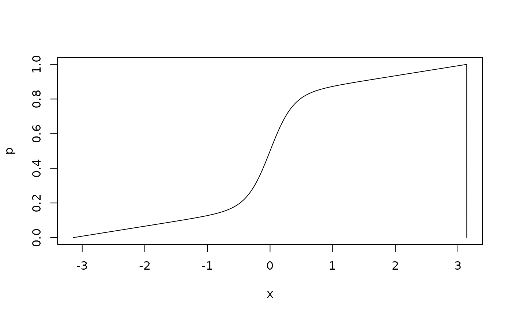
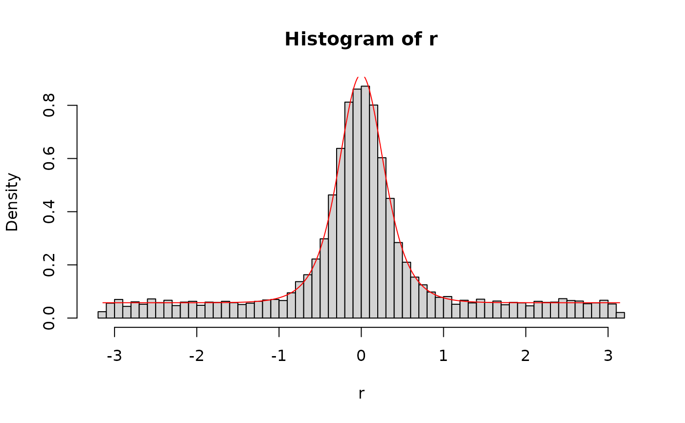

Density, distribution function, and random generation for the
Signal Discrimination Model (SDM) Distribution with location mu,
memory strength c, and precision kappa. Currently only a
single activation source is supported.
Usage
dsdm(x, mu = 0, c = 3, kappa = 3.5, log = FALSE, parametrization = "sqrtexp")
psdm(
q,
mu = 0,
c = 3,
kappa = 3.5,
lower.tail = TRUE,
log.p = FALSE,
lower.bound = -pi,
parametrization = "sqrtexp"
)
qsdm(p, mu = 0, c = 3, kappa = 3.5, parametrization = "sqrtexp")
rsdm(n, mu = 0, c = 3, kappa = 3.5, parametrization = "sqrtexp")Arguments
- x
Vector of quantiles
- mu
Vector of location values in radians
- c
Vector of memory strength values
- kappa
Vector of precision values
- log
Logical; if
TRUE, values are returned on the log scale.- parametrization
Character; either
"bessel"or"sqrtexp"(default). Seevignette("sdm-simple")for details on the parameterization.- q
Vector of quantiles
- lower.tail
Logical; If
TRUE(default), return P(X <= x). Else, return P(X > x)- log.p
Logical; if
TRUE, probabilities are returned on the log scale.- lower.bound
Numeric; Lower bound of integration for the cumulative distribution
- p
Vector of probabilities
- n
Number of observations to sample
Value
dsdm gives the density, psdm gives the distribution
function, qsdm gives the quantile function, rsdm generates
random deviates, and .dsdm_integrate is a helper function for
calculating the density of the SDM distribution.
Details
Parametrization
See vignette("sdm-simple") for details on the parameterization.
Oberauer (2023) introduced the SDM with the bessel parametrization. The
sqrtexp parametrization is the default in the bmm package for
numerical stability and efficiency. The two parametrizations are related by
the functions c_bessel2sqrtexp() and c_sqrtexp2bessel().
The cumulative distribution function
Since responses are on the circle, the cumulative distribution function
requires you to choose a lower bound of integration. The default is
\(-\pi\), as for the brms::pvon_mises() function but you can choose any
value in the argument lower_bound of psdm. Another useful
choice is the mean of the response distribution minus \(\pi\), e.g.
lower_bound = mu-pi. This is the default in
circular::pvonmises(), and it ensures that 50% of the cumulative
probability mass is below the mean of the response distribution.
References
Oberauer, K. (2023). Measurement models for visual working memory - A factorial model comparison. Psychological Review, 130(3), 841–852
Examples
# plot the density of the SDM distribution
x <- seq(-pi,pi,length.out=10000)
plot(x,dsdm(x,0,2,3),type="l", xlim=c(-pi,pi),ylim=c(0,1),
xlab="Angle error (radians)",
ylab="density",
main="SDM density")
lines(x,dsdm(x,0,9,1),col="red")
lines(x,dsdm(x,0,2,8),col="green")
legend("topright",c("c=2, kappa=3.0, mu=0",
"c=9, kappa=1.0, mu=0",
"c=2, kappa=8, mu=1"),
col=c("black","red","green"),lty=1, cex=0.8)
# plot the cumulative distribution function of the SDM distribution
p <- psdm(x, mu = 0, c = 3.1, kappa = 5)
plot(x,p,type="l")

# generate random deviates from the SDM distribution and overlay the density
r <- rsdm(10000, mu = 0, c = 3.1, kappa = 5)
d <- dsdm(x, mu = 0, c = 3.1, kappa = 5)
hist(r, breaks=60, freq=FALSE)
lines(x,d,type="l", col="red")
